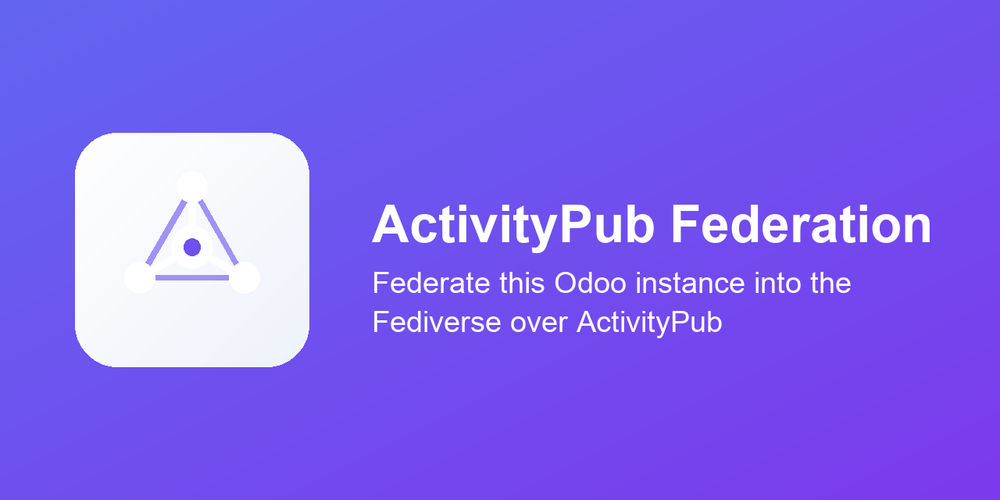

This module is the plumbing. It gives Odoo actors (federated identities), WebFinger and NodeInfo discovery, the HTTP Signatures every mainstream server requires, a signed delivery queue with retry, and an inbox that verifies and dispatches what comes back.
It publishes no content on its own — install a bridge: ActivityPub - Website Blog or ActivityPub - Website Events.
Each actor is scoped to a website; its Website Domain
becomes the @name@domain host. One instance can
federate every company branch under its own domain.
Followers, and inbound replies, edits, deletes, likes and boosts. Federated replies can be posted to the source record's chatter.
Every outbound dereference is SSRF-checked (no loopback / private / link-local), size- and redirect-capped. The inbox rejects unsigned or oversized requests and rate-limits floods.
Only requests and cryptography,
both already bundled with Odoo.
Licensed under LGPL-3.